收录于合集
以下文章来源于普林斯顿读书汇 ，作者PUP China
 普林斯顿读书汇 .
普林斯顿读书汇 .
普林斯顿大学出版社 (Princeton University Press) 旗下唯一公众号。自1905年起，PUP已成为全球顶尖学术成果与思想的传播者。关注我们，获取最新英文书摘，领军学者访谈，作者讲座活动。
政治科学作为一个学术出版领域在普林斯顿大学出版社（Princeton University Press, PUP）拥有着最悠久的历史和最频繁的更新速度。PUP的政治学出版物涵盖了该学科领域所有的研究方向和细分领域，包括政治学理论、国际关系、比较政治学和社会科学方法论等。
依托于与普林斯顿大学公共与国际事务学院的紧密联系，PUP出版了伊肯伯里、吉尔平等多位领域内具有全球影响力的普林斯顿大学教授的专著。秉持着严谨的同行评审机制和对顶尖学术思想的不懈追求，PUP成功吸引到来自哈佛肯尼迪学院、乔治城大学等多所领域内领军学术机构学者的出版合作。据政治科学领域核心期刊Political Science & Politics（政治科学与政治学）2011年的报道，在该领域学者们倾向合作的出版社排名中，普林斯顿大学出版社名列榜首。
本期书单分为三部分，第一部分“前沿速递”将推荐于2021年秋最新出版的政治学和国际关系学著作，第二部分“学科经典”展示了已得到学术界和市场广泛认可的经典作品，第三部分“学术伴侣”则囊括了有助于政治学学者及学生展开研究的优质参考书和教科书。本期书单全品均属于PUP2021年学术福袋计划（点击了解详情），享受超值满减，详情请见文末。
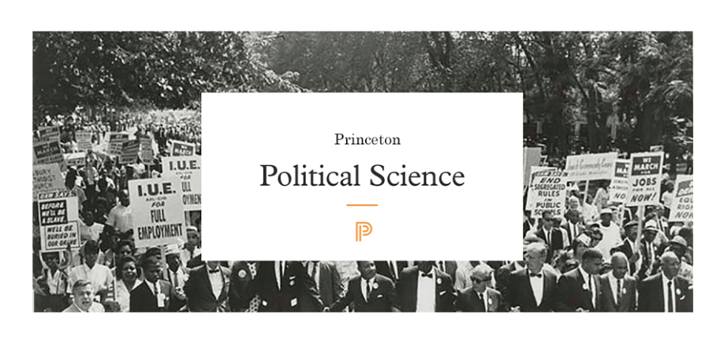
01 前沿速递
// 国家安全
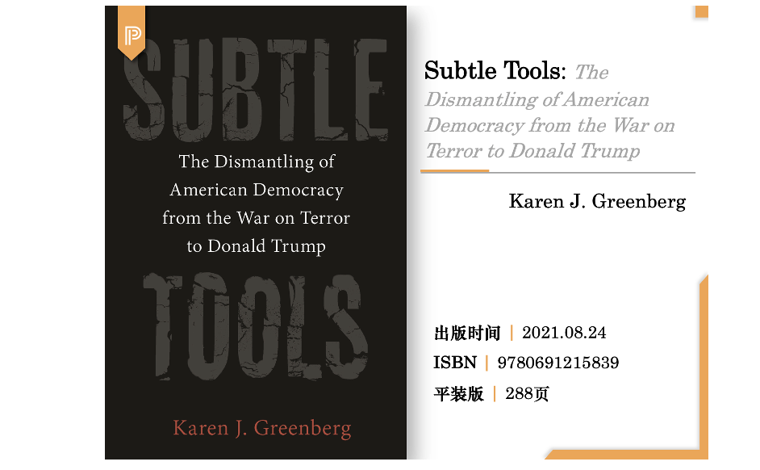
在“9·11”恐怖袭击之后，美国政府实施了一波公开的安全政策来打击国外的敌人。然而，在公众视线所不能及的地方，另一套工具被带到了国内阵线。Subtle Tools 追溯了从9·11事件到国会山暴动的美国现代历史，描述了这一时期美国政府的国家安全政策的发展和滥用。模糊的语言、官僚主义式的混乱、秘密主义、绕过法律程序……这些以安全为名采用的“不起眼的工具”，被特朗普政府用来在边境处拆散家庭、镇压“Black Lives Matter” 运动，乃至试图推翻2020年总统大选。
本书作者 Karen J. Greenberg 是美国福坦莫法学院国家安全中心主任，新美国智库国际研究员，美国外交关系协会永久会员。
// 政治省思
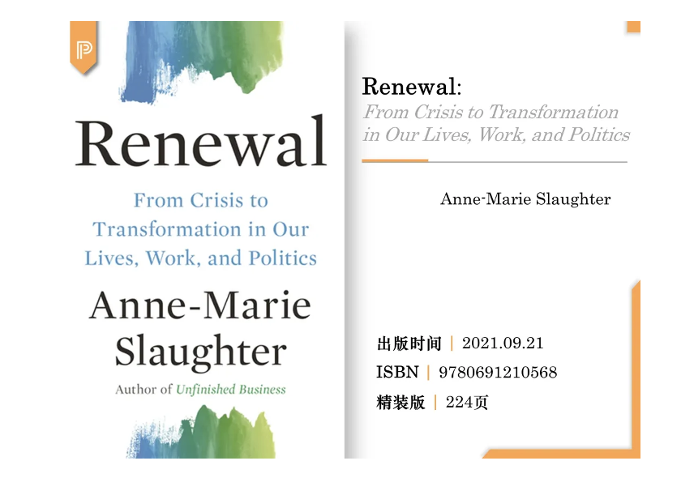
像世界上许多地方一样，美国在身份、平等和历史方面存在严重分歧。Renewal一书是安妮- 玛丽·斯劳特坦率而深刻的个人描述，通过分析自己的生活历险，她对实现个人、组织和国家如何共同进退、共面过去、拥抱未来提供了新的理解与方案。
斯劳特将个人反思与社会科学最新研究的见解相结合，讲述了历经改变人生的危机时，自我审视和成长的艰难时期。她将个人经历与国家身份和价值观危机联系起来，认为这种清算和反思是走向复兴的必要起步。既是个人旅程，亦是伟大宣言，本书诠释了以诚实淬炼的希望，是公民、领导人和未来变革者的基础读物。
安妮-玛丽·斯劳特是新美国智库（New America）CEO，普林斯顿大学政治和国际事务荣休教授。
// 欧盟模式
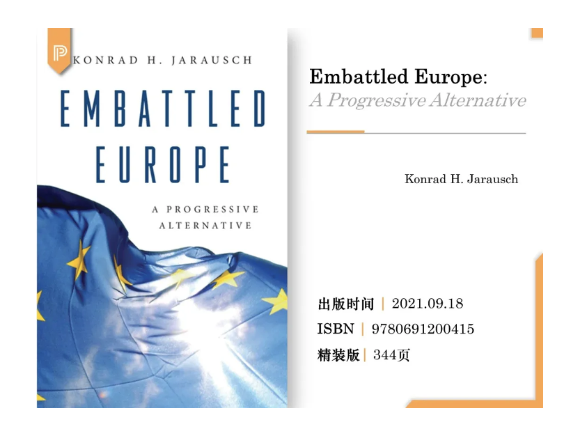
从债务危机、移民危机到亚洲崛起和英国脱欧，欧盟近年来面临重大危机。作者试图反驳“欧盟已经步入衰退”的流行论调，论证欧盟模式仍有顽强的生命力。作者认为欧盟提供了人类社会发展的模范模式之一，提供了俄式军事冒险主义、美式金权资本主义和右翼民粹势力的威权主义之外的“进步主义备选项”。在书中，作者提供了对1989年以来欧盟历史的生动叙述，展示了对欧洲在20世纪中面临的危机的深刻理解。
// 政治思想史
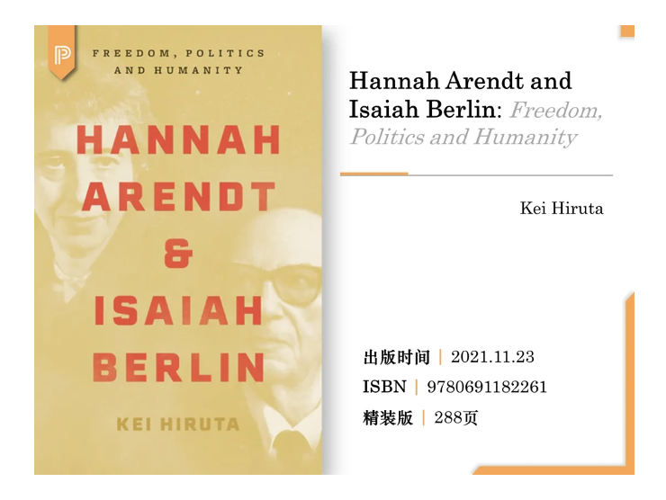
20 世纪最具标志性的两位思想家汉娜·阿伦特 和以赛亚·伯林在政治、历史和哲学的核心问题上存在根本分歧。尽管他们作为犹太移民知识分子的经历有着共同点，两人一直相互厌恶。本书以生动活泼、充满悲剧性和激情的方式讲述了两位杰出人物之间的紧张关系的完整脉络，展示了他们观点的深刻差异如何继续为今天的政治思想带来启发。
本书利用了大量新的档案材料，融合了政治哲学和思想史方法，研究了同时连接和分裂阿伦特和柏林的关键问题。但最重要的是，阿伦特和柏林在一个触及人类状况核心的问题上存在分歧：何为自由？
02 学科经典
// 政治心理学
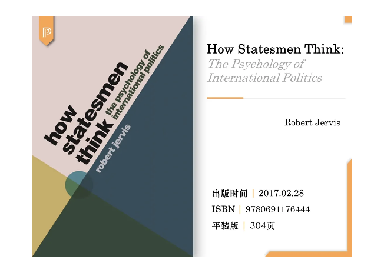
本书由国际政治心理学研究领域的领军学者罗伯特·杰维斯教授创作，是他四十多年来研究生涯的集大成之作。本书阐述了决策者在做出外交政策和国家安全判断时所受到的情绪、期望等心理因素影响，是国际关系领域的学生和学者不可或缺的读物。
// 政治经济学
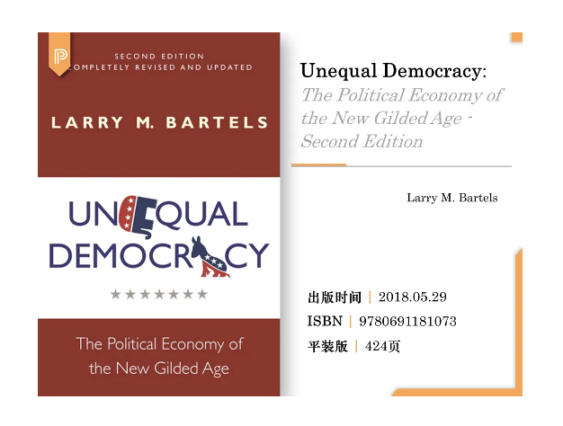
本书通过研究美国日益增长的贫富差距，揭示了美国民主体制运转中存在的问题，打破了人们对美国民主的幻想。本书一经出版便被奉为经典，此次的修订本更是增添了两篇“奥巴马时代的政治经济”章节，分别分析了奥巴马的“新政”及其第二任期的两党博弈对富人、中产阶级和穷人群体的影响，堪称政治经济领域的必读佳作。
Winner of the 2009 Gladys M. Kammerer Award, American Political Science Association
Winner of the 2009 Leon D. Epstein Outstanding Book Award, Political Organizations and Parties Section of the American Political Science Association
// 新自由制度主义
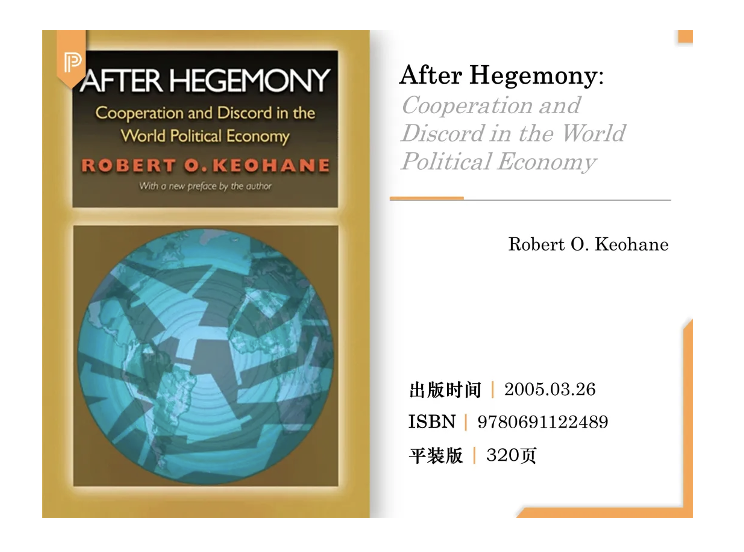
本书是自由制度主义理论权威罗伯特·基欧汉的代表性著作，也是迄今为止对发达资本主义国家间合作问题进行研究的最为全面、最具影响力的作品。本书分析了世界政治经济中合作得以发生的国际制度（或者国际机制）的作用，以及随着美国霸权的衰落，这些国际机制的演变情况。
Winner of the 1989 Grawemeyer Award for Ideas Improving World Order
One of Choice’s Outstanding Academic Titles for 1984
// 民族国家
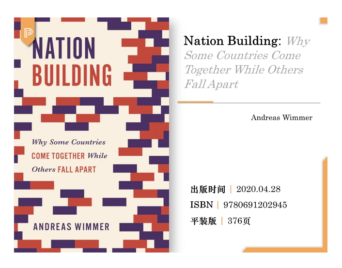
为什么有的国家因种族差异产生分裂，有的国家却能实现民族整合？本书提供了全新的答案。从19世纪初的欧洲、亚洲，到21世纪初的非洲，本书穿越时空，深入探讨了推动政治联盟跨越族群分歧、建立民族团结的发展力量。基于三对案例的比较研究和量化分析，本书提出了“国族建设论”，侧重缓慢发展的代际过程——即公民社会组织的传播、语言同化和国家提供公共物品的能力——为国家政治一体化提供了长期的历史视角和全球视野。
Winner of the Stein Rokkan Prize, European Consortium for Political Research
Co-Winner of the Barrington Moore Book Award, Comparative-Historical Sociology Section of the American Sociological Association
// 福利国家
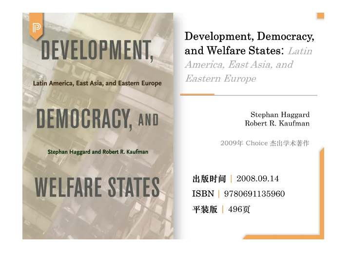
本书是第一本比较拉丁美洲、东亚和东欧的独特福利国家的学术著作，强调了将民主化和全球化的当代影响置于更广泛历史背景中的重要性。作者展现了拉丁美洲的专有福利制度（exclusionary welfare systems）和经济危机如何激励决策者采取自由的社会政策改革，而共产主义时代的社会权益则限制了东欧新民主国家自由改革的范围。在东亚地区，经济的高增长和宽松的财政条件则为扩大新民主国家的社会权利提供了机会。
One of Choice’s Outstanding Academic Titles for 2009
// 身份政治
特朗普的当选曾经作为“黑天鹅事件”震惊了全世界。本书提出，决定成败的因素在候选人产生之前就早已存在。这场看似打破了所有政治规则的大选实际上并不令人惊讶——人们基于身份认同的政治为这一切打下了根基。
// 政治极化
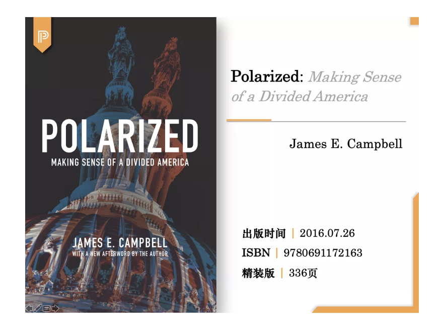
美国是个分裂的国家，这种分歧正在愈演愈烈。本书基于广泛的历史数据和对政治极化现象的统计测量，追溯了美国民众是如何从上世纪60年代开始逐渐走向两极分化的。
One of Choice’s Outstanding Academic Titles for 2016
**
**
// 经典套系
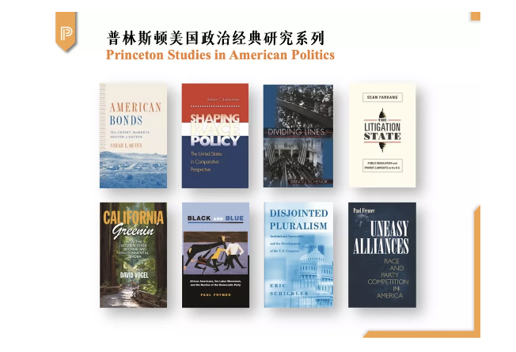
本系列出版的书籍堪称业内典范，既包括在该领域内顶尖学者们关于传统美国政治研究的重磅专著，又汇集了学术界新星学者跨越时代、方法论和分析领域所写就的创新性论著，极大地拓展了美国研究的深度和广度。
03 学术伴侣
// 经典KKV
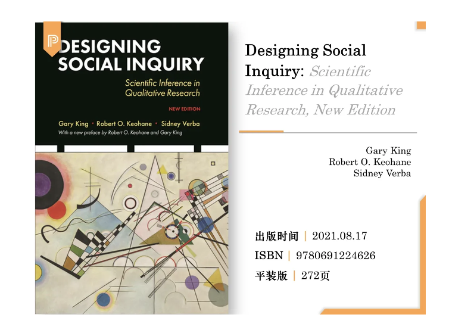
Designing Social Inquiry提出了政治科学中统一定性和定量研究的方法，揭示了二者相同的推理逻辑的基础。这本引人深思的作品讨论了与构建研究问题、测量数据的准确性、经验推论的不确定性、发现因果效应以及从定性研究中获得最大收益的相关问题。它涉及到丰富的主题，如解释和推理，比较案例研究，建立因果理论，依赖和解释变量，随机选择的限制，选择偏差，和测量误差等。本书对于没有数学或统计学先修基础的读者同样适用。罗伯特·基欧汉（Robert Keohane）和加里·金（Gary King）为此次的新版作序。
**
**
// 数学基础
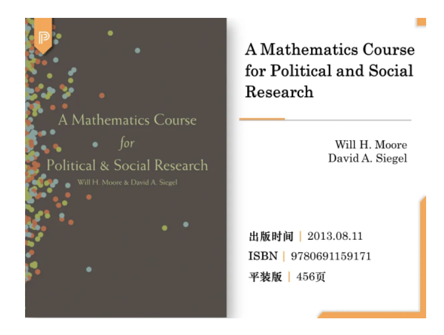
政治学和社会学越来越依赖于数学建模和复杂的数据分析，但现有的教科书多是为数学或经济学专业学生编写的，未能帮助政治学和社会学的学生学习数学抽象概念。本书填补了这一空白，既为社会科学领域的数学新手提供了入门知识，也为经验丰富的研究人员提供了便捷的参考。
**
**
// 调查实验
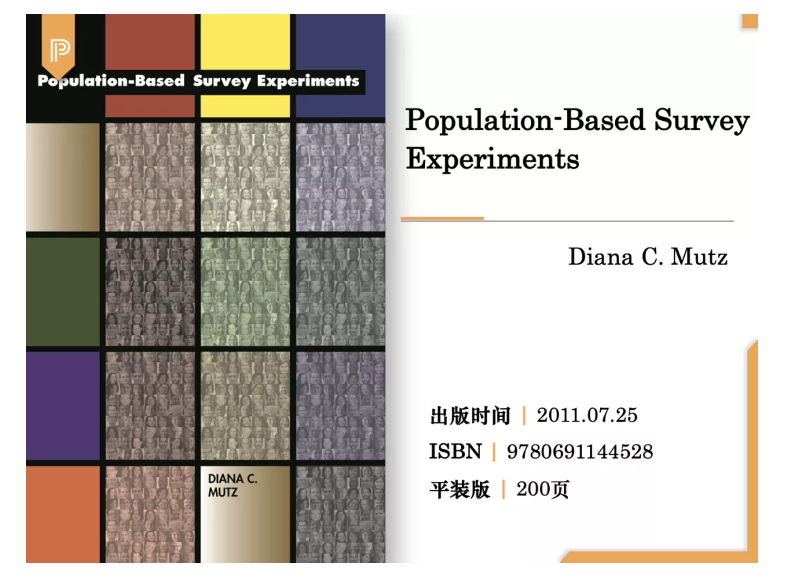
对受限于实验室研究结果的社会科学家和被围困于不确定性因果关系的研究人员来说，基于人口的调查实验堪称雪中送炭。随着科技进步，如今的科学家采取此种方法对理论上合适的人群样本进行实验。本书挑战了关于内外效度的传统观点，呈现了使用大规模群体样本进行远程实验的可能性，并揭示了因果关系的证明不需要以牺牲外部效度为代价。
// 方法之争
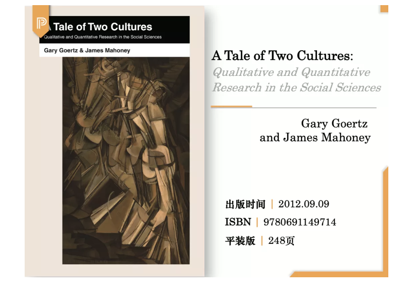
有些社会科学家认为，定性方法和定量方法具有统一的逻辑本质。本书揭示了两种方法除内在一致性外，也有着不同的规范、操作方式和工具。本书着眼于定性研究和定量研究之间的差异，提倡兼容的科学研究态度，旨在鼓励读者交流学习，超越自身的文化局限性，了解不同的科学世界观。
// 混合方法
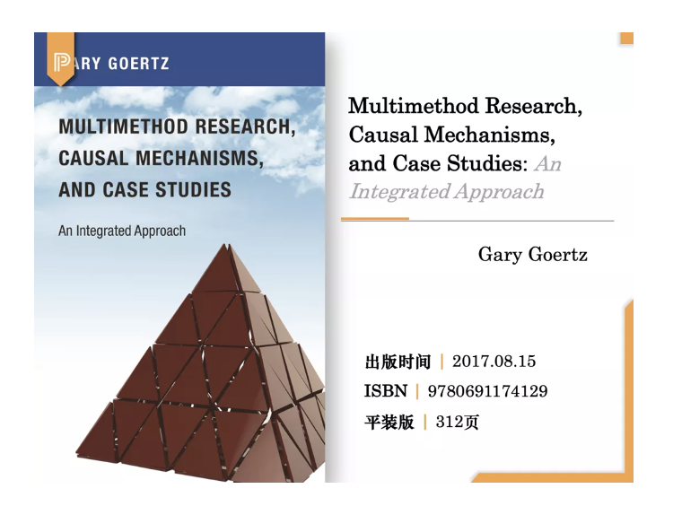
本书中提到的综合研究法将因果机制、跨案例因果推理和案例内因果推理结合起来，分析了利用案例研究进行归纳的过程，运用多个案例研究系统地测试了博弈论模型和其他模型。本书极具权威性和可读性，为多方法案例研究提供了全新的视角，是定性方法教学领域的必备教材，对政治学、社会学、教育学、法学和商科领域均具有指导意义。
// 理论读本
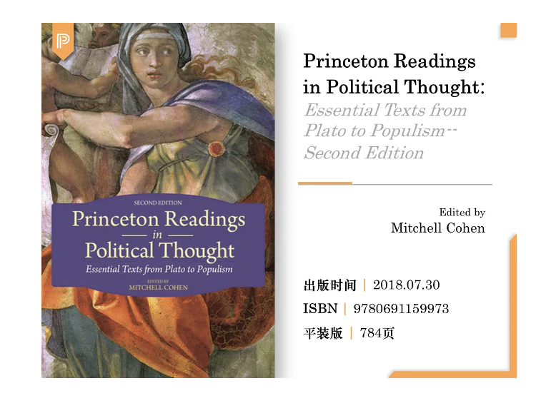
本书是西方政治思想中最受欢迎、范围最广、最引人入胜的经典文本选集之一，涵盖了从古代到21世纪中那些无可逆转地影响了我们对政治和社会的理解的关键文本。新版还从近期的思想家处选取了新内容，探讨了重要的当代问题，包括身份认同、世界主义、全球正义和民粹主义等。所收文本（论文、书摘、演讲和信件等）按时序编排，涉及的每一时期和每一位思想家书中都配有简短的导读。
**
**
// 美国研究必备
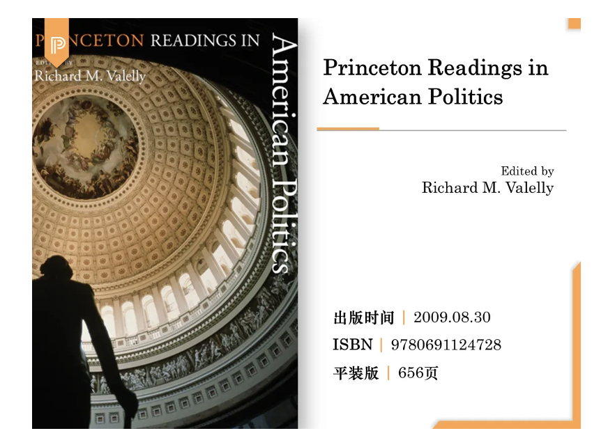
本书汇集了经受住时间考验的政治理论和最近的尖端分析，使本科生和研究生熟悉理解当今美国政治所需的实质性、概念性和方法论基础。本书分为多个部分，涵盖美国的主要政治机构总统、国会、法院，以及政党、宏观经济管理、投票和选举、政策制定、公众舆论和联邦制等核心主题。理查德·瓦莱利（Richard Valelly）以简洁翔实的介绍，为读者们提供了极富洞察力的政治学基础普及。
**
**
// PUP政治学书目专区
更多普林斯顿大学政治学书目
可点击以下二维码，直达澜瑞外文书店PUP政治学专区
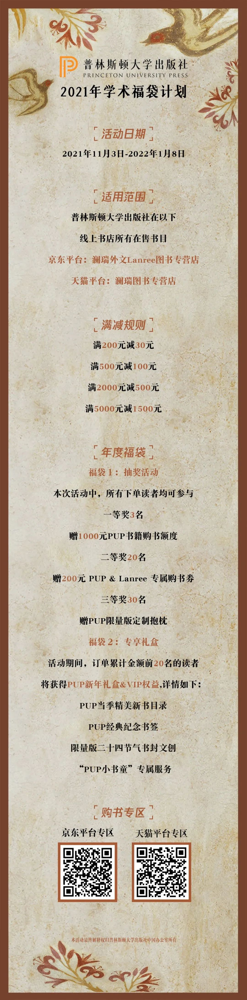
编辑：韩丽嵘